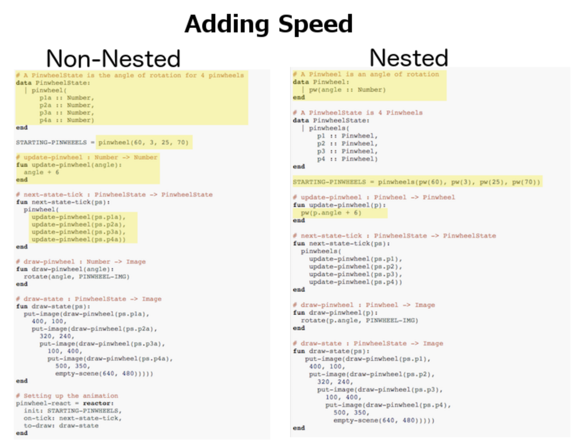
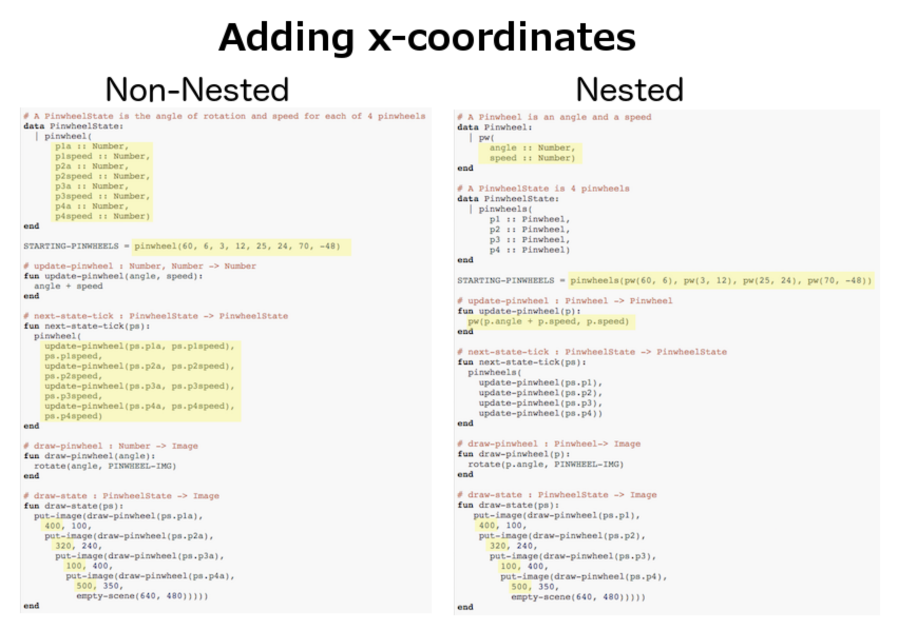

Going Deeper: Nested Structures
Students refactor code from a simple animation to include structures within structures, and see how to use nested structures in their own games and animations to manage complexity.
|
Product Outcomes |
|
|
Materials |
|
|
Preparation |
|
helper function-
a small function that handles a specific part of another computation, and gets called from other functions
| Nested Structures: Managing Complexity | 45 minutes |
Overview
Students are introduced to the need for nested data structures, as a way of managing complexity.
Launch
Now that you know all about data structures, you’re able to use them to make video games and animations from scratch, including games that are much more complex than those you worked on in Bootstrap:Algebra. However, as you add more things to your game, you quickly end up with a large number of elements in your data structure. (If you have multiple characters in your game, each with their own position, speed, costume, etc. that all change, your structure can become quite long and unwieldy.)
Making changes to your structure, or writing functions to alter it, can get extremely complex. One way to manage this complexity is to use nested structures: Just like we can write functions to handle repetitive processes, we can make structures to handle repetitive data. For example, if each of our 4 game characters have their own x and y coordinates, we could make one Position structure to use for each character. Then, instead of our game structure containing 8 numbers, it only contains 4 Positions.
Let’s start out with a small animation to explore the benefits of nested structures. Open the Pinwheels Starter #1 file in Pyret, and click "Run". We see four colorful pinwheels spinning in the breeze. Now, take a look at the code:
# A PinwheelState is the angle of rotation for 4 pinwheels
data PinwheelState:
| pinwheel(
p1a :: Number,
p2a :: Number,
p3a :: Number,
p4a :: Number)
end
STARTING-PINWHEELS = pinwheel(60, 3, 25, 70)The only things that change in this animation are the angles of rotaton for each of the 4 pinwheels, and each of those numbers are included in the PinwheelState data structure. As usual, we have a next-state-tick function to handle updating the state of the animation, and a draw-state function to draw the animation. We also have two helper functions to do some of the work for these main functions: update-pinwheel, which increases the angle for an individual pinwheel, and draw-pinwheel, which rotates the pinwheel image by the given angle. We’ll talk about helper functions in greater detail later, but for now, notice that because we’ve delegated most of the heavy lifting to these helpers, our next-state-tick function only needs to make a new PinwheelState by calling on update-pinwheel to increase the angle of rotation for each number in the structure. Most of the actual work in this function is done by update-pinwheel.
Suppose we wanted each of the pinwheels to spin at a different speed. We already know that any changeable part of the animation will need to be added to the structure, so we’ll need to add 4 new numbers to the PinwheelState structure.
Investigate
Print out the following link: code screenshot from the pinwheels file and underline or highlight each spot in the code you would need to change in order to add a speed to each pinwheel. Once you’ve identified which sections of the code will need to change, edit the program on the computer so that each pinwheel spins at a different speed.
Now we have a nice animation of pinwheels spinning at different speeds, but what if we had started off by making each individual pinwheel its own structure? As we’ll see shortly, this can help save us some time and headaches down the road, if we want to add to our animation later.
Open the Pinwheels Starter #2 file on your computer and take a look at the code. What differences do you see between this starter file and the first?
This animation looks exactly the same, but the data structure and the code is slightly different. This time, the PinwheelState data structure contains four Pinwheels, each their own structure, instead of four numbers. The angle of rotation is now contained inside the Pinwheel structure:
# A Pinwheel is an angle of rotation
data Pinwheel:
| pw(angle :: Number)
end
# A PinwheelState is 4 Pinwheels
data PinwheelState:
| pinwheels(
p1 :: Pinwheel,
p2 :: Pinwheel,
p3 :: Pinwheel,
p4 :: Pinwheel)
end
STARTING-PINWHEELS = pinwheels(pw(60), pw(3), pw(25), pw(70))-
How would you get
pw1out of theSTARTING-PINWHEELSinstance? -
How would you get the angle out of
pw2in theSTARTING-PINWHEELSinstance?
With nested structures, accessing fields in the "child" structure (in this case, Pinwheel requires two dots. So, STARTING-PINWHEELS.pw1 produces pw(60), the first Pinwheel. Whereas STARTING-PINWHEELS.pw2.angle produces 3, the angle of pw2.
Another change between the non-nested and nested versions of the code is that in the nested version, our helper functions update-pinwheel and draw-pinwheel now take in a Pinwheel data structure, as opposed to just a number. The animation still works and looks the same on the outside, and the code hasn’t changed too drastically.
Let’s do the same activity for the nested version of the code, where we make each pinwheel spin at a different speed.
Print out the following code screenshot for the nested pinwheels file, and underline or highlight each spot in the code you would need to change in order to change each pinwheel’s speed independently. Once you’ve identified which sections will need to change, edit the nested version of the program on the computer.
{kind=link}
Point out the differences in underlining between the two code screenshots. Note that when students finish this activity, both of the animations will look the same- but one program will have been much more straightforward to modify! We wrote a bit more code at the beginning to set up the nested structures, but that paid off later by giving us more flexibility to change the behavior of the pinwheels.

{kind=link}
Just by looking at the differences on paper, we can see the difference in complexity of changing our animations. In order to make each pinwheel spin at a different speed, much more of the non-nested program will need to change, as opposed to the nested version where only the Pinwheel structure, STARTING-PINWHEELS instance, and the update-pinwheel function need to be edited.
What if we wanted to add a breeze to our animation, and make the pinwheels move across the screen to the left? Let’s assume that each pinwheel moves at the same speed, but each of their x-coordinates will need to change.
Go through the same process as before: Starting with the non-nested version of the code, print out these code screenshots:
-
Non-nested pinwheels
{kind=link}
and underline or highlight the places in the code you would need to edit in order to change the x-coordinates of each pinwheel. Do this for both the nested and non-nested versions of the animation.

{kind=link}
As before, we end up underlining, and needing to change much more of the code in the non-nested version of the animation. We also may realize something important about the non-nested code: if both a pinwheel’s angle of rotation and its x-coordinate are changing, we’re no longer able to use our update-pinwheel helper function. Previously, this function consumed an angle and speed, and added these numbers together to produce the new angle. However, since functions can only return one thing at a time, we can’t use this function to produce the updated angle and updated x-coordinate. Instead, the work of decreasing the x-coordinate must be done inside next-state-tick. Writing that code is nothing new, but wouldn’t it be nice to leave next-state-tick alone, and update each pinwheel individually inside the helper function?
Synthesize
Compare the updating functions for the non-nested version of the code:
# update-pinwheel :: Number, Number -> Number
fun update-pinwheel(angle, speed):
angle + speed
end
# next-state-tick :: PinwheelState -> PinwheelState
fun next-state-tick(ps):
pinwheel(
update-pinwheel(ps.p1a, ps.p1speed),
ps.p1speed,
ps.p1x - 5,
update-pinwheel(ps.p2a, ps.p2speed),
ps.p2speed,
ps.p2x - 5,
update-pinwheel(ps.p3a, ps.p3speed),
ps.p3speed,
ps.p3x - 5,
update-pinwheel(ps.p4a, ps.p4speed),
ps.p4speed,
ps.p4x - 5)
end
And the nested version:
# update-pinwheel :: Pinwheel -> Pinwheel
fun update-pinwheel(p):
pw(p.angle + p.speed, p.speed, p.x - 5)
end
# next-state-tick :: PinwheelState -> PinwheelState
fun next-state-tick(ps):
pinwheels(
update-pinwheel(ps.p1),
update-pinwheel(ps.p2),
update-pinwheel(ps.p3),
update-pinwheel(ps.p4))
endNot only is the version which uses nested structures much shorter, it’s also much more readable. Using a nested structure affords us a unique opportunity for abstraction. If each pinwheel moves the same way, we can use one helper function on all of them, each time consuming a pinwheel and producing the updated pinwheel. This way the only function that needs to change is the one which addresses the "child" structure (in this case, update-pinwheel, which consumes a Pinwheel), and the function next-state-tick, which consumes the "parent" structure PinwheelState, can stay unchanged. This offers you lots more flexibility when making changes to your code, or adding things to a program.
You’ve seen how nested structures work inside a simple animation, but what about a more complex video game? Let’s return to he Ninja Cat game from Bootstrap:Algebra. Here’s the original data block and some sample instances from Ninja Cat:
# A GameState is a Player's x and y-coordinate, danger's x and y coordinate and speed, and target's x and y coordinate and speed
data GameState:
game(
playerx :: Number,
playery :: Number,
dangerx :: Number,
dangery :: Number,
dangerspeed :: Number,
targetx :: Number,
targety :: Number,
targetspeed :: Number,
score :: Number)
end
# Some sample GameStates
START = game(320, 100, 600, 75, 5, 1500, 250, 10, 0)
PLAY = game(320, 100, 600, 75, 5, 300, 250, 20, 0)And here’s the same game made with nested structures. To clean up the GameState structure, make it easier to read, and allow more flexibility in our code, we defined a new structure to represent a Character, which contains a single set of x and y-coordinates:
# A Character is an x and y-coordinate
data Character:
char(
x :: Number,
y :: Number)
end
data GameState:
game(
player :: Character,
danger :: Character,
dangerspeed :: Number,
target :: Character,
targetspeed :: Number,
score :: Number)
end
# Some sample GameStates
START = game(char(320, 100), char(600, 75), 5, char(1500, 250), 10, 0)
PLAY = game(char(320, 100), char(600, 75), 5, char(300, 250), 20, 0)For the nested structures version of Ninja Cat:
-
How would you get the player’s x-coordinate out of START?
-
What about the danger’s y-coordinate?
-
How would you get the target’s speed out of PLAY?
-
Finally, what do you notice about these two versions of the Ninja Cat data? Which do you prefer, and why?
Have students discuss the pros and cons of writing a game using nested or non-nested structures.
Now take a look at YOUR video games. If you were to re-write your program to use nested structures, what would it look like? Do you have multiple characters in your game with their own x, y, and speed? Do you have any opportunities to use helper functions to move characters in the same way?
For practice, re-write the data block and sample instances for your video game using nested structures.
These materials were developed partly through support of the National Science Foundation,
(awards 1042210, 1535276, 1648684, and 1738598).  Bootstrap by the Bootstrap Community is licensed under a Creative Commons 4.0 Unported License. This license does not grant permission to run training or professional development. Offering training or professional development with materials substantially derived from Bootstrap must be approved in writing by a Bootstrap Director. Permissions beyond the scope of this license, such as to run training, may be available by contacting contact@BootstrapWorld.org.
Bootstrap by the Bootstrap Community is licensed under a Creative Commons 4.0 Unported License. This license does not grant permission to run training or professional development. Offering training or professional development with materials substantially derived from Bootstrap must be approved in writing by a Bootstrap Director. Permissions beyond the scope of this license, such as to run training, may be available by contacting contact@BootstrapWorld.org.